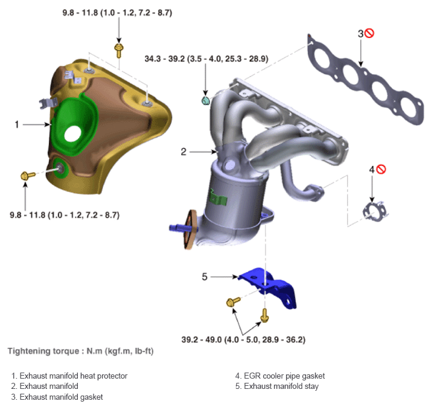

LEMON Manuals
: Even more car manuals for everyone: 1960-2025
Home
>>
Hyundai
>>
2022
>>
Elantra N Line, Standard Trans
>>
Repair and Diagnosis (Single Page)
>>
External Pages
>>
Different variant/trim
>>
Section 12 (Intake And Exhaust System - 2.0L (Except HEV))
>>
Exhaust Manifold And Catalytic Converter
>>
Components & Components Location
>>
Components
Components & Components Location: Components
WARNING:
This page is about a different variant/trim than selected.
Fig 1: Exhaust Manifold And Catalytic Converter Components Location With Torque Specification

Courtesy of HYUNDAI MOTOR AMERICA